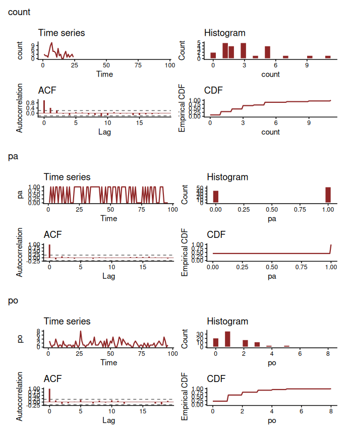
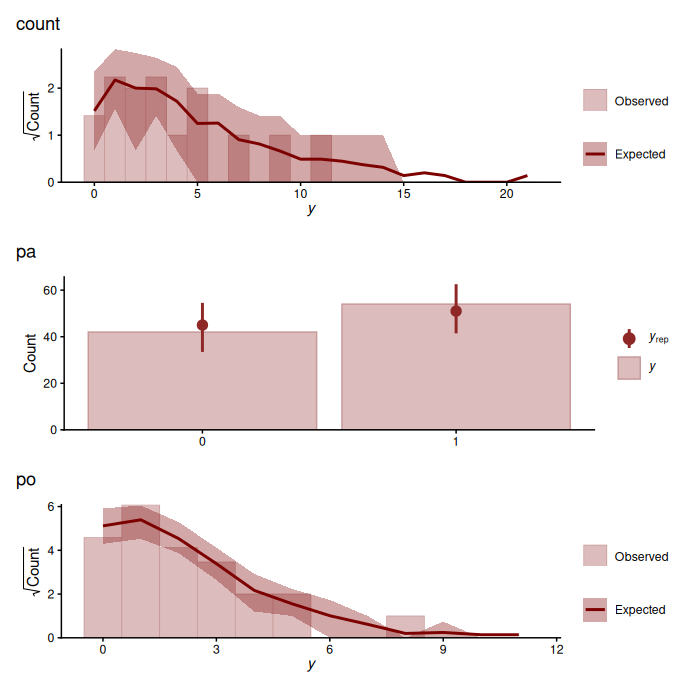
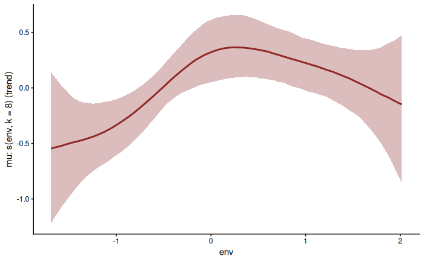
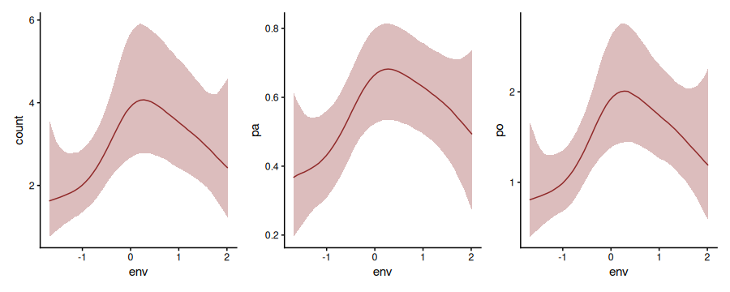
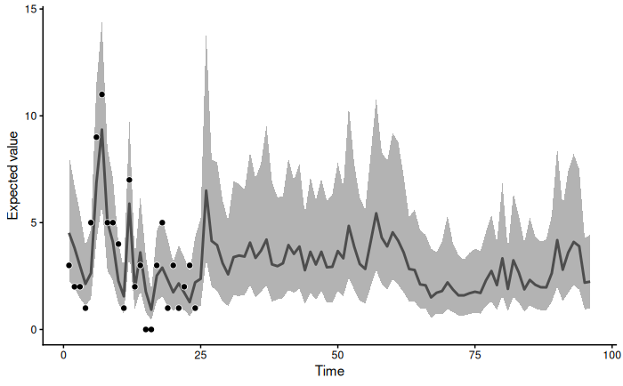
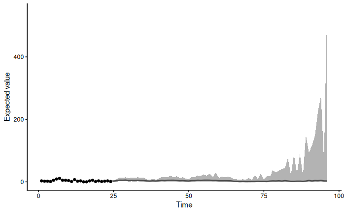
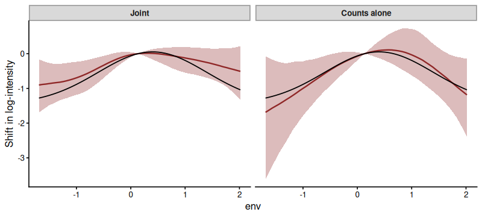
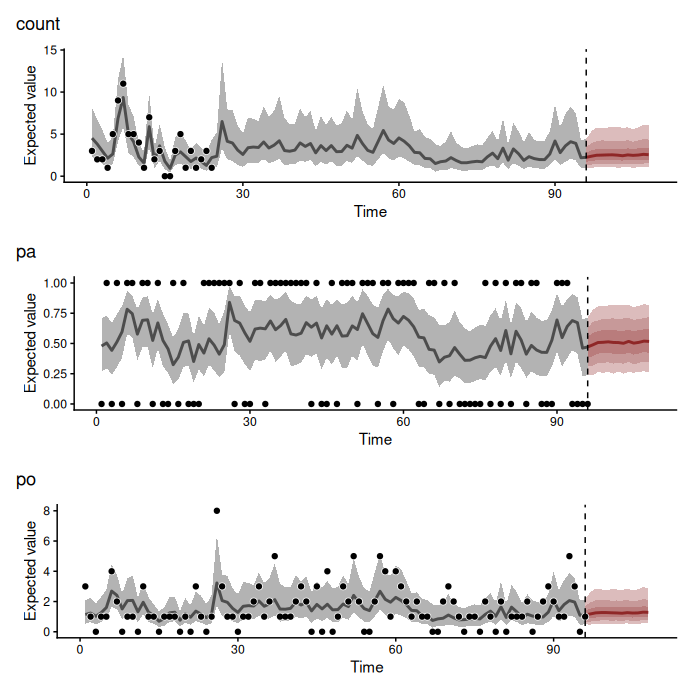

Integrated distribution models with mvgam
Nicholas J Clark
2026-11-27
Source:vignettes/articles/idm.Rmd
idm.RmdSpecies are often monitored in several ways at once. A count route, an occupancy survey and opportunistic sightings all record the same population, each through its own sampling process. Integrated distribution models give each data source its own likelihood and link all of them to one shared model of abundance (Fithian et al. 2015; Isaac et al. 2020; Miller et al. 2019).
mvgam fits these models with one call. Each data source gets its own
bf() formula, with the family and link that match how it
samples the population. A single trend_formula describes
the abundance that all data sources share. Modelled as a state-space
process, this shared trend can include smooth covariate effects and
temporal autocorrelation together. The data sources also need not cover
the same months. Each contributes only the months in which it was
collected, while the shared trend is estimated for every month. All of
mvgam’s post-fitting tools, from posterior predictive checks to
forecasts, work on the joint model.
In this article we simulate three kinds of data on one species. The count route, the most informative data source, runs for only the first two years of an eight-year record. We show how the joint model estimates the constants that separate the data sources, how it estimates the species’ response to an environmental gradient and how it estimates counts for the six years in which the route was not surveyed. The article on one latent process with several observation models focuses on the latent process that such models share.
The data
We simulate one species observed monthly for eight years. Its intensity is the expected number of individuals per unit of sampling effort. On the log scale, it combines a bell-shaped response to an environmental index with an autoregression at lags 1 and 12:
with , and . The response peaks at env .
Each data source links to
through its own sampling process. Counts along a route surveyed with
effort
are Poisson with mean
,
with the effort entering through the term
offset(log_effort). An occupancy survey of a plot of area
detects the species when at least one individual is present. With a
Poisson number of individuals in the plot, the detection probability is
.
This is the inverse complementary log-log link, under which
(McCullagh and Nelder 1989). With
bernoulli(link = "cloglog"), the occupancy record shares
the log-intensity of the counts, offset by
.
Opportunistic sightings arrive at rate
thinned by an unknown, constant observer effort. We treat them as a
thinned Poisson process, whose own intercept absorbs the unknown
thinning. The shape of
can then still be estimated from the sightings (Fithian et al. 2015; Renner et al.
2015).
set.seed(2026)
n_t <- 96
env <- as.numeric(scale(cumsum(rnorm(n_t, 0, 0.3))))
f_env <- function(x) 1.5 * exp(-0.5 * (x - 0.4)^2) - 0.4
z <- numeric(n_t)
for (t in seq_len(n_t)) {
z[t] <- rnorm(1, 0, 0.35) +
(if (t > 1) 0.55 * z[t - 1] else 0) +
(if (t > 12) 0.30 * z[t - 12] else 0)
}
lambda <- exp(0.5 + f_env(env) + z)
effort <- runif(n_t, 0.5, 2)
area <- 0.25
log_thinning <- -0.8
idm_data <- data.frame(
time = seq_len(n_t),
series = factor("species1"),
env = env,
log_effort = log(effort),
count = rpois(n_t, lambda * effort),
pa = rbinom(n_t, 1, 1 - exp(-lambda * area)),
po = rpois(n_t, lambda * exp(log_thinning))
)
# The count route ran for the first two years only. Later months carry
# unit effort, which makes their hindcasts expected counts per unit
# effort
unsurveyed <- idm_data$time > 24
idm_data$count[unsurveyed] <- NA
idm_data$log_effort[unsurveyed] <- 0The joint model
The three bf() calls share one trend formula, which
holds a smooth of env and the autoregression at lags 1 and 12. The
missing counts need no special handling. The counts use their 24
surveyed months, while the occupancy and sightings records use all
96.
joint_formula <-
bf(count ~ 1 + offset(log_effort), family = poisson()) +
bf(pa ~ 1, family = bernoulli(link = "cloglog")) +
bf(po ~ 1, family = poisson())
trend_formula <- ~ s(env, k = 8) + AR(p = c(1, 12))
mod_joint <- mvgam(
joint_formula,
trend_formula = trend_formula,
data = idm_data,
control = list(adapt_delta = 0.95),
chains = 4, seed = 2026, silent = 2
)plot(type = "series") draws each data source’s record,
its distribution and its autocorrelation. The count record stops after
month 24:
plot(mod_joint, type = "series")
The three simulated records: counts, occupancy detections and opportunistic sightings.
summary() reports one intercept per data source and the
trend parameters they share. Its data line gives the number of
observations of each data source:
summary(mod_joint)
#> Family: count: poisson
#> pa: bernoulli
#> po: poisson
#> Links: count: mu = log
#> pa: mu = cloglog
#> po: mu = log
#> Formula: count ~ 1 + offset(log_effort)
#> pa ~ 1
#> po ~ 1
#> Data: idm_data (Number of observations: 96; observed count: 24, pa: 96, po: 96)
#> Trends: AR({1, 12}); formula: ~s(env, k = 8)
#> Draws: 4 chains, each with iter = 2000; warmup = 1000; thin = 1;
#> total post-warmup draws = 4000
#>
#> == Observation Model ==
#> Regression Coefficients:
#> Estimate Est.Error l-95% CI u-95% CI Rhat Bulk_ESS Tail_ESS
#> count_Intercept 1.03 0.14 0.74 1.29 1.00 4339 3068
#> pa_Intercept -0.23 0.15 -0.54 0.05 1.00 5266 3110
#> po_Intercept 0.33 0.10 0.11 0.51 1.00 3800 2524
#>
#> == Trend Model ==
#> Smoothing Spline Hyperparameters:
#> Estimate Est.Error l-95% CI u-95% CI Rhat Bulk_ESS Tail_ESS
#> sds(senv_1) 2.07 1.21 0.46 5.02 1.00 1271 1591
#>
#> Regression Coefficients:
#> Estimate Est.Error l-95% CI u-95% CI Rhat Bulk_ESS Tail_ESS
#> senv_1 -0.92 3.58 -9.16 5.08 1.00 1875 1143
#>
#> Trend Specific Parameters:
#> Estimate Est.Error l-95% CI u-95% CI Rhat Bulk_ESS
#> sigma_trend[species1] 0.34 0.09 0.18 0.53 1.00 1460
#> ar1_trend[species1] 0.13 0.25 -0.38 0.60 1.00 1579
#> ar12_trend[species1] -0.11 0.30 -0.66 0.45 1.00 1476
#> Tail_ESS
#> sigma_trend[species1] 2235
#> ar1_trend[species1] 1548
#> ar12_trend[species1] 2361
#>
#> Draws were sampled using sampling(NUTS). For each parameter, Bulk_ESS
#> and Tail_ESS are effective sample size measures, and Rhat is the potential
#> scale reduction factor on split chains (at convergence, Rhat = 1).
#>
#> Next steps:
#> - `pp_check(fit)`: posterior predictive checks
#> - `forecast(fit, newdata = ...)`: out-of-sample forecasts
#> - `lfo_cv(fit)`: leave-future-out model comparison
#> - `conditional_effects(fit)`: covariate effects
#> Use `how_to_cite(fit)` for a methods paragraph and `methods_md(fit)` for its equations.The 95% intervals of the two AR coefficients and the innovation SD all contain the values used to simulate the data. These intervals are wide, because eight years of data on one species say little about its dynamics.
Each data source has its own intercept. Every data source’s linear
predictor contains the same
,
which cancels when we subtract one intercept from another. The occupancy
intercept minus the count intercept leaves
.
The sightings intercept minus the count intercept leaves the log
thinning. hypothesis() computes both differences with their
intervals:
constants <- hypothesis(mod_joint, c(
`log area` = "pa_Intercept - count_Intercept = 0",
`log thinning` = "po_Intercept - count_Intercept = 0"
))
constants
#> Hypothesis Tests for class :
#> Hypothesis Estimate Est.Error CI.Lower CI.Upper Evid.Ratio Post.Prob Star
#> 1 log area -1.26 0.19 -1.63 -0.89 NA NA *
#> 2 log thinning -0.70 0.16 -1.01 -0.39 NA NA *
#> ---
#> 'CI': 90%-CI for one-sided and 95%-CI for two-sided hypotheses.
#> '*': For one-sided hypotheses, the posterior probability exceeds 95%;
#> for two-sided hypotheses, the value tested against lies outside the 95%-CI.
#> Posterior probabilities of point hypotheses assume equal prior probabilities.The simulated constants are and . Both intervals contain them. We never gave the model either constant. It estimates them from the two years in which all three data sources overlap.
pp_check() draws one panel per data source. Rootograms
compare the frequency of each count. Bars give the share of each outcome
of the binary occupancy record:
pp_check(mod_joint, ndraws = 50)
Posterior predictive checks for each data source.
The environmental response
plot(type = "smooths") draws the smooth of env on the
log-intensity scale:
plot(mod_joint, type = "smooths")
The smooth of env from the joint model, with its 95% credible interval.
conditional_effects() translates the smooth to the scale
of each data source: the expected count, the detection probability and
the expected number of sightings along env. It leaves out the
autoregressive part of the trend and sets effort to one:
ce <- conditional_effects(mod_joint)
patchwork::wrap_plots(plot(ce, plot = FALSE), nrow = 1)
Expected count, detection probability and sighting rate along env from the joint model, with 95% credible intervals.
Filling the gaps between surveys
To see what the occupancy and sightings records add, we also fit the counts alone with the same trend formula:
mod_count <- mvgam(
bf(count ~ 1 + offset(log_effort), family = poisson()),
trend_formula = trend_formula,
data = idm_data,
control = list(adapt_delta = 0.95),
chains = 4, seed = 2026, silent = 2
)hindcast() estimates the expected count in every month
of the data, including the 72 months in which the route was not
surveyed. For the joint model, resp = "count" selects the
counts:
hc_joint <- hindcast(mod_joint, type = "expected", resp = "count")
hc_count <- hindcast(mod_count, type = "expected")
plot(hc_joint)
Expected counts per unit effort from the joint model. Points are the counts of the first two years.
plot(hc_count)
Expected counts per unit effort from the model fitted to the counts alone. Its y-axis extends ten times further than that of the joint model.
After month 24, the counts-alone model has no data on abundance. Its estimates come only from the autoregression and the environmental index. Its intervals grow wider over time. Across the 72 unsurveyed months, its 95% intervals have a median width of 13.9 individuals. The joint model still has sightings and occupancy records in those months. Its intervals have a median width of 4.8 individuals.
The extra data also sharpen the estimated response to env. To compare the two estimates of , we predict each model’s linear predictor across a grid of env values. We then subtract its value at the middle of the grid. The subtraction removes the intercept and the autoregressive part of the trend, which differ between the models. Only the response to env remains:
grid <- seq(min(env), max(env), length.out = 60)
ref <- which.min(abs(grid - median(grid)))
newdata <- idm_data[rep(1, length(grid)), ]
newdata$env <- grid
newdata$log_effort <- 0
response_draws <- function(fit, resp = NULL) {
lp <- posterior_linpred(fit, newdata = newdata, resp = resp)
lp - lp[, ref]
}
fits <- list(
"Joint" = response_draws(mod_joint, resp = "count"),
"Counts alone" = response_draws(mod_count)
)
truth <- data.frame(env = grid, f = f_env(grid) - f_env(grid[ref]))
curves <- do.call(rbind, lapply(names(fits), function(nm) {
q <- apply(fits[[nm]], 2, quantile, c(0.025, 0.5, 0.975))
data.frame(model = nm, env = grid, lo = q[1, ], med = q[2, ],
hi = q[3, ])
}))
curves$model <- factor(curves$model, levels = names(fits))
ggplot(curves, aes(env)) +
geom_ribbon(aes(ymin = lo, ymax = hi), fill = "#DCBCBC") +
geom_line(aes(y = med), colour = "#8F2727", linewidth = 0.8) +
geom_line(aes(y = f), data = truth, linewidth = 0.6) +
facet_wrap(~ model) +
labs(x = "env", y = "Shift in log-intensity")
Posterior medians and 95% credible intervals of the response to env from the joint model and from the counts alone. The black line is the simulated response.
The 95% intervals of both models contain the simulated response across the whole range of env. With six more years of sightings and occupancy records, the joint model’s 95% interval is on average 43% narrower.
Forecasts
forecast() projects the shared trend 12 months beyond
the data and converts it to each data source’s scale. For the new months
we set effort to one and hold env at its last observed value. With
type = "expected", the forecasts are the expected count,
the detection probability and the expected number of sightings:
future <- data.frame(
time = n_t + 1:12,
series = factor("species1"),
env = env[n_t],
log_effort = 0,
count = NA, pa = NA, po = NA
)
fc <- forecast(mod_joint, newdata = future, type = "expected")
plot(fc)
Expected values for each data source over the training months and a 12-month forecast. Points are the observations.
All three forecasts come from the same projected trend. The count
route was last surveyed six years before the forecast starts. The model
can still forecast counts because the sightings and occupancy records
tracked abundance through those six years. When new data arrive,
score() evaluates the forecast of each data source.
A separate response for each data source
The joint model above gives every data source the same response to env. If one data source might record a different response, for example because its plots sample a different habitat, it can take its own smooth of env in its observation formula. The smooth in the trend formula then describes the shared response, while each extra smooth describes how that data source departs from it:
diff_formula <-
bf(count ~ 1 + offset(log_effort), family = poisson()) +
bf(pa ~ 1 + s(env, k = 5), family = bernoulli(link = "cloglog")) +
bf(po ~ 1 + s(env, k = 5), family = poisson())
mod_diff <- mvgam(
diff_formula,
trend_formula = trend_formula,
data = idm_data,
control = list(adapt_delta = 0.95),
chains = 4, seed = 2026, silent = 2
)Summary
An integrated distribution model in mvgam is one call. Each data source has the family and link that match its sampling process. Each is surveyed on its own schedule. A shared state-space trend combines the information from all data sources. Covariate effects, autocorrelation and forecasts all come from that one model. In this simulation, the joint model recovers both constants that separate the data sources and estimates counts through six years without a count survey.
Where to next
Each function used here has a help page, such as
?pp_check or ?AR, with its arguments and
output. how_to_cite() writes a methods paragraph for a
fitted model. methods_md() writes out its equations.
Related articles:
- One latent process, several observation models compares the latent state recovered by joint and separate fits.
- N-mixture models estimate detection from repeated visits in a single survey.
- Joint species distribution models share latent factors among many species.
- Forecast evaluation covers scoring rules and leave-future-out cross-validation.
References
Fithian W, Elith J, Hastie T and Keith DA (2015). Bias correction in species distribution models: pooling survey and collection data for multiple species. Methods in Ecology and Evolution 6(4), 424-438. doi:10.1111/2041-210X.12242
Isaac NJB, Jarzyna MA, Keil P, Dambly LI, Boersch-Supan PH, Browning E, Freeman SN, Golding N, Guillera-Arroita G, Henrys PA, Jarvis S, Lahoz-Monfort J, Pagel J, Pescott OL, Schmucki R, Simmonds EG and O’Hara RB (2020). Data integration for large-scale models of species distributions. Trends in Ecology & Evolution 35(1), 56-67. doi:10.1016/j.tree.2019.08.006
McCullagh P and Nelder JA (1989). Generalized Linear Models (2nd edition). Chapman and Hall/CRC. doi:10.1201/9780203753736
Miller DAW, Pacifici K, Sanderlin JS and Reich BJ (2019). The recent past and promising future for data integration methods to estimate species’ distributions. Methods in Ecology and Evolution 10(1), 22-37. doi:10.1111/2041-210X.13110
Renner IW, Elith J, Baddeley A, Fithian W, Hastie T, Phillips SJ, Popovic G and Warton DI (2015). Point process models for presence-only analysis. Methods in Ecology and Evolution 6(4), 366-379. doi:10.1111/2041-210X.12352